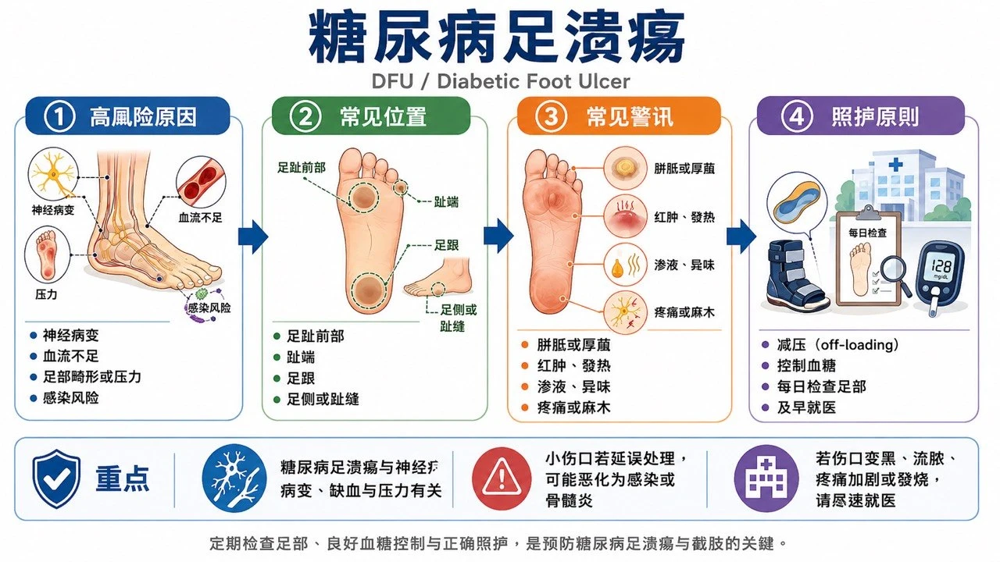
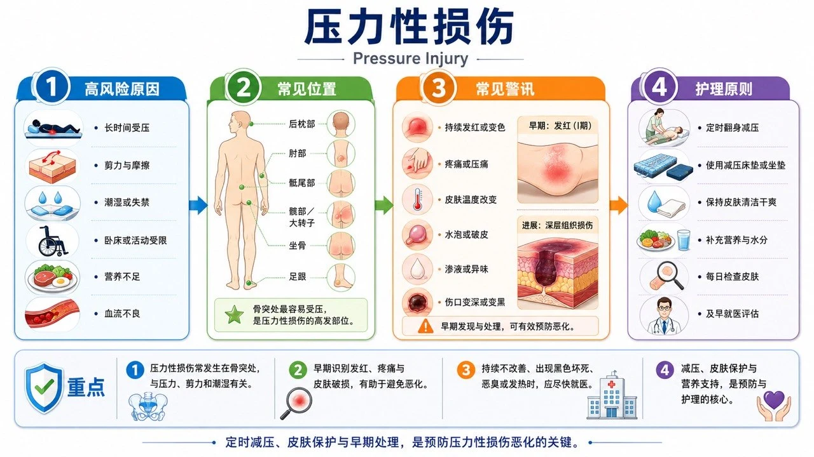

慢性伤口（医护人员专业版）
一、慢性伤口的共通定义与评估原则
1. 时间定义（分层，而非单一门槛）
- 约 4 周适当治疗仍未见预期缩小或进展 → 愈合迟缓警讯：重新评估病因、血流、感染、压力与治疗依从性
- 持续 4–6 周未愈合 → 临床上归入难愈合／慢性伤口管理
- 超过 3 个月 → 明确的长期未愈合伤口
2. 所有慢性伤口共用的评估项目
- 位置、数量、持续时间及复发史
- 长、宽、深、面积、潜行、窦道及腔洞
- 肉芽、腐肉、焦痂、上皮及外露深层组织比例
- 伤口边缘、周围皮肤、水肿及浸润
- 渗液量、颜色、黏稠度、气味与出血
- 疼痛程度、性质及与外观是否相称
- 足部／肢体感觉、活动能力及压力来源
- 脉搏、ABI、TBI、趾压、Doppler 波形；必要时 TcPO₂ 或皮肤灌流压
- 临床感染、扩散性感染、败血症及骨髓炎警讯
- 标准化照片与面积变化率
二、各类慢性伤口（14 类）
1. 糖尿病足溃疡 DFU


定义与特征：糖尿病患者足部全层皮肤缺损，与神经病变、足部变形、反复压力及 PAD 有关。好发足底跖骨头、足跟、趾端、趾间及鞋具压迫处。神经病变型位于承重点、周围胼胝、疼痛不明显；缺血型位于趾端或足外侧、较痛、皮肤冰冷脉搏弱。病因明确即可诊断，不需等 4 周。
病因与危险因子：感觉运动自主神经病变；足部变形、Charcot foot 及异常足压；不合适鞋具、赤脚或自行修剪胼胝；PAD、肾衰竭、透析、吸烟、高龄；血糖控制不佳、视力不良及既往溃疡或截肢；感染及骨髓炎。
评估工具：10-g 单丝、音叉震动觉；足背胫后动脉及灌流；ABI、TBI／趾压及 Doppler（血管钙化可使 ABI 假性升高）；probe-to-bone、X 光，骨髓炎疑虑考虑 MRI；SINBAD／UT／WIfI 分类；感染用 IWGDF/IDSA 分级；清创后深部组织检体优于表面拭子。
治疗：有效减压是足底神经病变性溃疡的内核；移除胼胝与失活组织（严重缺血先评估血流）；临床感染才用全身抗生素、不治疗定植；PAD 尽早评估血管重建；依渗液与伤口床选敷料；难愈合者评估负压、细胞组织产品；高压氧非常规治疗，仅特定病例个别评估。
预防卫教：每日检查足底趾间足跟与鞋内；不赤脚、不用热水袋、不自行剪胼胝；合脚鞋具、治疗鞋垫；控糖、戒烟；愈后持续减压并定期足部风险评估。（IWGDF 2023）
2. 压力性损伤 Pressure injury


定义与特征：皮肤及／或深部软组织因持续压力（或压力＋剪力）产生的局部损伤。好发荐尾、足跟、坐骨、大转子、踝部及枕部；也见于氧气面罩、鼻胃管、石膏等器材下。依 Stage 1–4、Unstageable 及 DTPI 分类。可短时间形成；4 周未改善即进入难愈合评估。
病因与危险因子：无法翻身、瘫痪、镇静或意识障碍；压力剪力摩擦及不良微环境；失禁潮湿发烧多汗；灌流不足、低血压、贫血；营养不足、体重过低或肥胖；高龄、末期疾病及器材压迫。
评估工具：全身皮肤检查（含器材下方）；Braden Scale 等风险工具（不取代临床判断）；深度潜行窦道坏死纪录；骨髓炎评估（probe-to-bone、X 光、MRI、骨检查）；快速恶化评估深部感染与坏死性软组织感染；深色肤色同时观察温度、硬度、疼痛及组织一致性。
治疗：完整减压翻身与压力再分配；合适床垫坐垫及足跟悬空；依血流、坏死型态及目标选择清创；管理感染失禁疼痛营养挛缩；深部伤口评估负压；大型 Stage 3–4 考虑手术清创及皮瓣重建；稳定干燥无感染的缺血性足跟焦痂不应任意清创，先评估血流。
预防卫教：依个别风险制定翻身频率；每日检查骨突及器材下方；控制失禁潮湿、皮肤屏障产品；正确移位避免拖拉；坐姿定时减压；支撑面不能完全取代翻身。（International Pressure Injury Guideline 2019）
3. 动脉性溃疡 Arterial ulcer

定义与特征：动脉灌流不足造成缺血、坏死或溃疡。常见趾端、趾间、足跟、外踝、足外侧及受压处。Punched-out 外观、基底苍白或坏死、渗液少；周围冰冷苍白无毛、脉搏弱；休息痛、夜间痛或垂足后改善。溃疡合并缺血即可诊断。
病因与危险因子：动脉粥样硬化性 PAD；糖尿病、吸烟、高血压、高血脂；慢性肾病及透析；血栓、栓塞、血管炎；局部压力或外伤叠加低灌流。
评估工具：脉搏、温度、肤色及微血管回填；ABI（钙化疑虑用 TBI、趾压或 Doppler 波形）；TcPO₂ 或皮肤灌流压评估愈合可能；WIfI 分类；Duplex、CTA、MRA 或血管摄影规划重建。
治疗：尽速转介血管专科评估血管内或外科重建；抗血小板、降脂、血压、糖尿病管理及戒烟；缺血未处理前避免积极清除稳定干燥焦痂；避免不适当高压压迫；感染与湿性坏疽紧急处理；血流改善后再清创重建。
预防卫教：戒烟控糖控脂控压；每日足检、避免赤脚烫伤鞋压；不自行剪焦痂鸡眼；休息痛、趾端变黑、伤口或足部冰冷立即就医。（SVS；Conte 2019 GVG）
4. 静脉性溃疡 Venous leg ulcer

定义与特征：慢性静脉高压造成皮肤变化及溃疡。好发小腿 gaiter area（尤其内踝）。较浅、边缘不规则、渗液多；伴水肿、静脉曲张、色素沉着、脂肪皮肤硬化及静脉性湿疹。多数定义为静脉疾病背景下持续 4–6 周未愈合的下腿溃疡。
病因与危险因子：深层或表浅静脉逆流；静脉阻塞或既往 DVT；小腿肌帮浦不良；肥胖、久站、活动不足、高龄；既往静脉性溃疡。
评估工具：水肿、静脉曲张、色素及硬化评估；足部脉搏及 ABI（糖尿病或钙化加做 TBI）；Duplex 评估逆流或阻塞；CEAP 分类；不因表面培养阳性即诊断感染。
治疗：确认动脉灌流可接受后，压迫治疗是内核；多层绷带、短伸展系统或压迫袜；擡腿、行走及小腿肌帮浦运动；控制渗液、保护周围皮肤、适当清创；评估表浅静脉介入；抗生素仅用于临床感染。
预防卫教：愈后长期治疗型弹性袜；活动、踝关节运动及体重控制；避免久站或双脚下垂；保湿并处理静脉性湿疹；定期检查压迫袜尺寸弹性与穿法。
5. 淋巴水肿／长期水肿相关伤口
定义与特征：淋巴回流障碍或长期组织液累积造成皮肤脆弱、淋巴液渗漏及溃疡。常见小腿、踝部、足背或癌症治疗后肢体。非凹陷性水肿、皮肤增厚、乳突状变化及淋巴液渗出。
病因与危险因子：原发性淋巴异常；淋巴结切除、放疗或肿瘤阻塞；肥胖、活动不足、反复蜂窝性组织炎；慢性静脉疾病、心衰竭或肾病；皮肤屏障破损及真菌感染。
评估工具：肢体周径、体积、皮肤厚度及 Stemmer sign；排除 DVT、急性蜂窝性组织炎与心衰竭代偿不全；下肢伤口评估动脉灌流；必要时 Duplex、淋巴摄影；记录渗漏量及浸润。
治疗：排除禁忌后个别化压迫治疗；皮肤照护、运动、擡高与淋巴水肿复健；高吸收敷料管理淋巴液；反复蜂窝性组织炎依感染指南治疗；特定患者评估淋巴手术或减积手术。
预防卫教：每日清洁保湿、处理趾间霉菌；避免割伤烫伤及不必要穿刺；依处方穿压迫衣物；运动及体重管理；红热痛＋发烧立即评估蜂窝性组织炎。
6. 混合型动静脉溃疡
定义与特征：同时存在静脉高压与动脉灌流不足。可同时见水肿、色素沉着与足部冰冷、脉搏减弱；位置外观介于典型静脉与动脉之间。
评估工具：ABI、TBI／趾压、Doppler 波形及必要时 TcPO₂；动脉与静脉 Duplex；不应只依 ABI 单一数值决定压迫强度。
治疗：由血管专科先完成灌流风险分层；轻至中度动脉疾病可在专业监测下用降低／调整后的压迫；严重缺血优先评估血管重建；清创与敷料依灌流及活性调整；感染或坏疽加速处理。
预防卫教：不自行使用高压弹性袜或绷带；依处方压迫、活动与足部保护；戒烟及管理动脉硬化危险因子；疼痛增加、足部变冷或变色时立即停止并就医。
7. 放射性伤口 Radiation-induced wound

定义与特征：放射线造成血管内皮损伤、纤维化、组织缺氧及再生能力下降。急性皮肤炎见于治疗期间；晚期溃疡可于数月数年后出现。常见乳房／胸壁、头颈、骨盆或既往放射区。周围皮肤萎缩、纤维化、微血管扩张、色素改变。
评估工具：放疗部位、时间与剂量纪录；评估纤维化、骨外露、瘘管及深部感染；影像排除骨放射性坏死、脓疡或肿瘤复发；不典型或进展性伤口活检；必要时血流及组织氧合。
治疗：优先排除肿瘤复发；温和清创及无创伤性敷料；治疗感染疼痛营养；选定病例专科评估高压氧；广泛纤维化或坏死可能需切除至健康组织＋血流良好的皮瓣重建。
预防卫教：放射区避免摩擦烫伤日晒；温和清洁保湿；不自行用刺激性药物或黏着材料；新溃疡、硬块、出血或疼痛尽早回肿瘤科／整形外科。（NCI）
8. 癌症伤口 Malignant／fungating wound

定义与特征：肿瘤直接侵犯皮肤或皮肤转移造成的溃疡、蕈状增生或坏死。常见乳房、头颈、皮肤癌或转移病灶。大量渗液、恶臭、易出血、疼痛及外生肿块。诊断由肿瘤侵犯决定。
评估工具：肿瘤病史、病理及影像；大小隆起坏死出血渗液异味疼痛；不明肿瘤性伤口需活检；区分定植、局部感染与全身感染；评估大血管侵犯及灾难性出血风险。
治疗：以肿瘤治疗、症状控制及患者目标为内核；低沾黏高吸收敷料及皮肤保护膜；异味以清洁、控制坏死与特定局部治疗管理；易出血组织避免粗暴清创；准备局部止血及紧急出血计划；评估放疗、全身治疗、手术或介入止血；缓和医疗、疼痛科及心理支持及早介入。
预防卫教：低创伤换药及出血处理教学；备妥深色毛巾、止血物品及紧急联系方式；观察出血感染疼痛渗液；尊重隐私、气味控制及生活目标；多数目标是症状控制而非保证完全愈合。（Macmillan）
9. 手术后难愈合伤口
定义与特征：切口未在预期期间愈合，或裂开、感染、窦道、慢性渗液或植入物外露。见于腹部、胸骨、会阴、骨科与重建手术区。术后 4 周缺乏进展即应完整病因再评估；区分表浅裂开、深部筋膜裂开及器官腔室感染。
评估工具：手术方式、植入物及术后经过；深度、筋膜完整性、潜行、窦道及渗液；超音波或 CT 评估深部液体脓疡；清创后深部培养；长期窦道排除异物、骨髓炎、肠瘘或肿瘤。
治疗：控制感染、移除坏死、处理血肿脓疡；确认是否移除植入物；适当病例负压治疗；处理死腔、筋膜缺损及瘘管；稳定后延迟关闭、植皮或皮瓣重建；内脏外露或筋膜裂开属外科急症。
预防卫教：术前戒烟、血糖及营养优化；SSI 预防规范；避免张力与不当活动；教导红肿渗脓裂开发烧警讯；明确术后追踪安排。
10. 发炎性伤口 Inflammatory ulcer
定义与特征：由免疫失调或全身性发炎疾病造成的溃疡总称（中性球性皮肤病、结缔组织疾病、血栓性疾病等）。疼痛剧烈、边缘发炎、快速扩大或多发。
评估工具：完整皮肤、关节、肠胃及全身病史；CBC、发炎指针、自体抗体、补体及凝血；伤口边缘活检（病理＋细菌霉菌分枝杆菌）；排除感染、血管疾病与恶性肿瘤；皮肤科与风湿免疫科共同评估。
治疗：治疗基础免疫或发炎疾病；低创伤敷料及疼痛控制；未排除坏疽性脓皮症前避免积极清创；免疫治疗前合理排除感染；跨科共同照护。
预防卫教：避免不必要穿刺手术及反复机械性清创；持续控制基础疾病；发炎突然扩大、疼痛恶化或发烧立即就医；不自行停用免疫调节药物。
11. 血管炎相关溃疡 Vasculitic ulcer
定义与特征：血管壁发炎造成血管破坏、血栓与组织缺血。常见双侧小腿及踝部；由紫斑、网状青斑、结节或水泡进展为疼痛性坏死溃疡；可能伴肾、肺、神经或关节症状。
评估工具：新鲜病灶适当深度活检（必要时直接免疫萤光）；CBC、肾肝功能、尿液、ESR/CRP、ANA、ANCA、补体等个别化检查；依风险查 B、C 肝及其他感染；血流检查排除共存 PAD；系统性症状进行器官评估。
治疗：治疗原发病因及系统性血管炎；温和清洁、疼痛控制与适当敷料；清创前评估血流及发炎活性；免疫抑制由专科决定；不能因表面菌落延误血管炎治疗。
预防卫教：监测肾功能、尿液及系统性症状；避免吸烟、低温与外伤；血尿、呼吸困难、咳血、神经症状或快速皮肤坏死紧急就医。
12. 坏疽性脓皮症 Pyoderma gangrenosum
定义与特征：罕见中性球性皮肤病，不是细菌性「脓皮症」。由脓疱或小伤口快速扩大为极度疼痛的溃疡；紫红色、潜行或破坏性边缘及坏死基底；常见小腿，也见于手术切口、造口。外伤或清创可引发 pathergy 使病灶恶化。
评估工具：记录疼痛、扩大速度、边缘与 pathergy；活检主要用于排除感染、血管炎及肿瘤（病理可能仅见非特异性中性球浸润）；组织同时送细菌霉菌分枝杆菌检验；评估 IBD、关节病及血液疾病；及早皮肤科会诊。
治疗：避免未受控制病灶的积极外科清创；低创伤敷料及充分止痛；局部或全身免疫调节由皮肤科决定；确有感染同时治疗，但不能只因培养阳性就当成感染性溃疡；疾病控制后才评估重建。
预防卫教：随身注记 坏疽性脓皮症 (PG) 及 pathergy 风险；非必要避免皮肤穿刺与手术；换药减少摩擦与黏着损伤；病灶突然扩大或新发脓疱立即回诊。（DermNet）
13. 非典型感染造成的慢性伤口
定义与特征：结核菌、非结核分枝杆菌、深部霉菌、寄生虫或特殊细菌造成，不符合一般细菌性感染表现。慢性结节、窦道、脓疡、坏死或长期少量渗液；常见于手术、注射、医美、水域暴露、外伤或免疫低下者；对一般抗生素反应不佳。
评估工具：详细暴露、旅游、手术及用药史；取得深部组织（不只表面拭子）；分别申请一般细菌、厌氧菌、霉菌、分枝杆菌培养及病理；必要时分子检测或特殊染色；影像评估范围；采检前与感染科及微生物实验室沟通保存与培养条件。
治疗：依确定病原与药敏选择疗程（部分需数月、多重药物）；合并脓疡坏死或异物时手术；未取得适当检体前，避免反复短期广效抗生素掩盖诊断；感染科、皮肤科、外科及微生物团队共同处理。
预防卫教：外伤后记录水域土壤动物暴露；医疗与美容处置落实无菌；不共用药膏或自行长期使用抗生素；治疗期间遵守长疗程及药物监测。
14. 不明原因、长期未愈合伤口
可能被遗漏的原因：动脉静脉或混合型血管疾病；持续压力摩擦或未充分减压；糖尿病及感觉神经病变；慢性或非典型感染；骨髓炎、异物、瘘管或植入物感染；血管炎、坏疽性脓皮症 (PG) 及其他发炎性疾病；皮肤癌、肿瘤侵犯或放射性伤害；药物、营养、免疫及自伤因素。
评估：从病史、理学检查及机转重新开始；重新测量并检查原治疗是否真正运行；完整血管与神经评估；依疑虑影像检查；伤口边缘及基底活检（病理＋多类微生物）；查看药物营养免疫及全身疾病；多专科讨论。
治疗原则：暂停无效或可能有害的治疗；先确认病因再决定清创、压迫、减压或免疫治疗；未排除缺血前不高压压迫；未排除 坏疽性脓皮症 (PG) 前避免反复积极清创；未排除肿瘤前不要只持续换药；病因处理后再评估高端敷料、生物制剂、负压或重建。
卫教：固定方式拍照量测；明确告知 4 周疗效检查点；扩大、边缘异常、疼痛加剧、反复出血或治疗无效时提早转诊；避免自行长期使用抗生素类固醇或刺激性消毒剂；创建单一主要照护团队。
三、全身与营养评估的重要修正
建议同时评估：非刻意体重下降；BMI 及肌肉量；实际热量与蛋白质摄取；吞咽、牙齿及肠胃功能；CRP 等发炎状态；肝肾功能及水分状态；CBC、铁、维生素与微量元素检查的临床适应症。
最后更新：2026-08-27